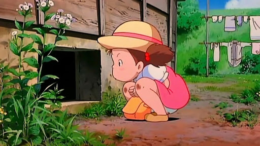

宮崎駿迷來挑戰！

Q01、神隱少女中，因偷了印章受到守護咒語而感到痛苦的白龍，小千給他吃了河神贈與的一半丸子來解除咒語。剩下的另外一半丸子最後給予誰吃下??
Q02、龍貓中，小梅最先發現哪隻熊貓??
Q03、霍爾的移動城堡中，霍爾的城堡門口有個顏色轉盤，能通往各個地點，其中綠色通往??

Q04、波妞(ポニョ)是哪種生物??
Q05、天空之城中，希達和巴魯一同念出了毀滅咒語破壞天空之城，其咒語為??
Q06、魔女宅急便中，琪琪(キキ)所飼養的黑貓吉吉(ジジ)年齡為幾歲??
Q07、魔法公主中，小桑(サン) 如何餵食因傷無法進食的阿席達卡(アシタカ)??
Q08、紅豬中，紅豬發現天空上有條長雲，其構成原因為??
Q09、風起中，主角堀越二郎在真實故事中的名字??
Q10、風之谷的古老傳說：「藍衣人將降臨在金色的草原，並引導人們所帶來希望。」劇中金色的草原指的是金色的陽光照在什麼東西上??
Q11、神隱少女中，無臉男(カオナシ)吃下誰獲得說話的能力??

Q12、龍貓中，小梅探望母親時迷路的原因是??
Q13、霍爾的移動城堡中，誰幫忙蘇菲在荒地找到了霍爾的移動城堡??
Q14、崖上的波妞中，波妞在何種情況下變成半人魚??
Q15、天空之城中，空中海賊「朵拉一家」的親生兒子有幾個??
Q16、魔女宅急便中，琪琪失去魔法的原因為何??
Q17、魔法公主中，阿席達卡(アシタカ)為了不讓小桑(サン)與黑帽大人(エボシ御前)互相攻擊，被何人用刀劃傷了臉部??
Q18、紅豬中，紅豬的本名是??

Q19、風起中，女主角第一次在火車上接到了男主角被風吹掉的帽子；多年後男主角在草原上接到女主角被風吹走的??
Q20、風之谷中，腐海劇毒的瘴氣，其毒素來源為何處??
Q21、神隱少女中，白龍(ハク)的本名，日本使用漢字為何??(非中文翻譯)
Q22、神龍貓中，龍貓被命名為(トトロ)的由來??
Q23、霍爾的移動城堡中，卡西法(カルシファー)哪種狀態下會變成粉紅色的??
Q24、崖上的波妞中，向日葵之家的老奶奶們誰講到波妞是「人面魚」而被噴水??
Q25、天空之城中，天空之城拉普達能一直漂浮於空中的能量來源為何??
Q26、魔女宅急便中，蜻蜓(トンボ)從哪種飛行器上發生意外，讓琪琪恢復魔力拯救了他??
Q27、魔法公主故事發生時間設定在日本哪個時代??
Q28、紅豬中，紅豬如何擊敗卡地士(カーチス)??
Q29、風起中，誰講到：「飛機是個美麗卻受詛咒的夢想。」??
Q30、風之谷的古老傳說：「藍衣人將降臨在金色的草原，並引導人們所帶來希望。」劇中娜烏西卡的衣服染上了王蟲的血而變成青色，請問染色之前衣服顏色是??